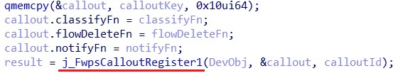

Экстенсивный подход. Как много техник можно обнаружить в одном образце вредоносного программного обеспечения (ВПО)

— "Прошу расшифровать трафик в адрес ..." - описание задачи в трэкере.
— "Давай, Морти! Приключение на 20 минут. Зашли и вышли."
Но, как и у героев мультфильма, приключение несколько затянулось. Расшифрованный трафик только привлек внимание и подогрел интерес к обнаруженному образцу. Самая любопытная часть исследования, а именно используемые ВПО техники, и будет изложена в данной статье.
Предыстория
Мне давно нравились публикации и вебинары от Positive Technologies на тему ИБ и вирусной аналитики в частности. И вот выпал шанс попасть к ним на стажировку. Мне довелось работать в команде с людьми, которые невероятно увлечены тем, что они делают, обладают обширными знаниями и охотно делятся своим опытом. В ходе стажировки мне досталось несколько интересных задач, результатами работы над одной из них я и решил поделиться.Несколько слов об образце
Исследуемый образец вредоносного программного обеспечения был обнаружен на просторах внешних песочниц и прежде всего интересен количеством и разнообразием используемых техник. Широкий функционал обеспечивается за счет загрузки дополнительных модулей с сервера.Взаимодействие с сервером осуществляется посредством шифрованных сообщений, для чего к полезным данным добавляется специальный заголовок, содержащий необходимую служебную информацию - особую метку, маркер типа сообщения, размер данных, контрольнуя сумму, ключ шифрования и т.д. На сервер отправляется информация о целевой системе, такая как версия ОС, имя компьютера, mac-адрес сетевой карты, mac-адрес шлюза, а также версия ВПО. В ответ сервер отправляет соответствующий конфигурационный файл и запароленные архивы, в которых содержатся различные исполняемые файлы (драйвера, exe-файлы, динамические библиотеки) и файлы с дополнительной конфигурационной информацией.
Стоит также отметить, что большая часть исполняемых файлов упакована VMprotect'ом. Есть хорошая статья по тому, как устроена виртуальная машина VMprotect'а. В случае с exe и dll файлами особых трудностей распаковка не вызывает, но для драйверов все несколько сложнее. В данном случае, для распаковки, снимались дампы памяти ядра ОС, извлечение из них нужных образов, а для восстановления импортов - эмуляция обфусцированных вызовов функций при помощи unicorn. Такой способ хорошо описан в этой статье.
Используемые техники
1. Внедрение кода в секции .text легитимных исполняемых файлов
Для маскировки подозрительной активности код вызова некоторых функций может помещается в секции .text других исполняемых файлов. Это возможно благодаря тому, что все секции исполняемого файла выравнены по определенной границе. Таким образом в конце секции присутствует не используемый участок памяти. Для поиска такого участка и определения "объема доступной памяти" можно воспользоваться данными из заголовка IMAGE_SECTION_HEADER исполняемого файла, а именно полями VirtualAddress, SizeOfRawData и VirtualSize.Рис. 1. Поиск "свободного" места в секции .text
Когда нужный участок памяти найден, необходимо отметить его как доступный для записи. В режиме ядра для этого существует несколько способов. Одним из них является использование функции MmProbeAndLockPages с параметром LOCK_OPERATION равным IoWriteAccess или IoModifyAccess. Функция осуществляет фиксацию страниц виртуальной памяти с указанными правами доступа.
Рис. 2. Фиксация страниц виртуальной памяти
Далее в найденный участок памяти помещаются опкоды инструкций для осуществления безусловного перехода на заданный адрес. Проще говоря - помещается код, который вызовет указанную функцию.
Рис. 3. Внедрение инструкций безусловного перехода
В приведенном фрагменте кода можно заметить баг - значение параметра LOCK_OPERATION устанавливается в IoReadAccess.
Не проверенное предположение: может оказаться, что IoReadAccess не помеха, и запись возможна. Основанием для таких подозрений является то, что это не единственный случай подобного бага. Такой код встречался и ранее в другом ВПО. Хотя возможно имеет место переиспользование/заимствование кода.
2. Reflective load
Техника заключается в загрузке в оперативную память и запуске исполняемого файла в обход штатных, предназначенных для этих целей, механизмов ОС. Для этого программному обеспечению необходимо считать заголовок исполняемого файла, выделить достаточный объем памяти (обычно по размеру образа), расставить секции файла по виртуальным адресам, загрузить необходимые библиотеки, пересчитать IAT, обработать таблицу релокаций, вызвать TLS колбэки и передать управление на точку входа. Описание техники с примерами кода можно найти здесь.3. Reflective loader injection
Сначала подготавливается буфер, в который помещаются имена необходимых функций и библиотек, сам исполняемый файл (который необходимо внедрить в целевой процесс) и код, выполняющий его загрузку по методу Reflective load. Для пересчета адресов, в исходном коде загрузчика заменяются предусмотренные для этого значения.Рис. 4. Подготовка загрузчика
Далее, подготовленный буфер записывается в адресное пространство целевого процесса. После передачи управления загрузчик получает адреса нужных ему функций и выполняет загрузку исполняемого файла (чтение заголовка, расстановку секций и т.д.).
Рис. 5. Загрузка исполняемого файла
4. Защита процессов/потоков
Для ограничения доступа к защищаемым процессам и потокам функцией ObRegisterCallbacks регистрируются соответствующие коллбэки. Вызов коллбэков происходит при создании или дублирование хэндла на объект ядра соответствующего типа (например тригером может служить вызов функции OpenProcess). При регистрации указываются тип объекта ядра, для которого регистрируется коллбэк, тип операции - создание или дублирование, и указатели на функции-обработчики.Рис. 6. Регистрация коллбэков
Любопытный момент. Если верить MSDN, то функцией ObRegisterCallbacks можно установить коллбэки для процессов, потоков и объектов рабочего стола. Однако в структуре _OBJECT_TYPE_INITIALIZER (которая является частью структуры _OBJECT_TYPE) присутствует флаг SupportsObjectCallbacks. Установив этот флаг в 1, можно зарегистрировать коллбэк и для других объектов типа.
Примечание. Если верить различным источникам, то такой способ работает только в Win 7, т.к. установка флага SupportsObjectCallbacks в последующих версиях детектится патч-гардом. Однако можно проверить в какой момент осуществляется проверка данного флага, и попробовать вернуть его в исходное состояние уже после регистрации колбэка.
Рис. 7. Структура _OBJECT_TYPE
Рис. 8. Структура _OBJECT_TYPE_INITIALIZER
Примечание. Если верить различным источникам, то такой способ работает только в Win 7, т.к. установка флага SupportsObjectCallbacks в последующих версиях детектится патч-гардом. Однако можно проверить в какой момент осуществляется проверка данного флага, и попробовать вернуть его в исходное состояние уже после регистрации колбэка.
Один из драйверов использует эту особенность для контроля доступа к файлам, за счет регистрации коллбэка для объекта типа IoFileObjectType.
Рис. 9. Установка флага SupportsObjectCallbacks
Рис. 10. Регистрация коллбэка для объекта типа IoFileObjectType
В самой функции-обработчике (коллбэке) проверяется маска доступа к объекту и при необходимости заменяется, ограничивая доступ к объекту. Например для объекта типа процесс, можно запретить приостановку, завершение, запись в адресное пространство, создание дочерних процессов и т.д.
Рис. 11. Ограничение доступа к объекту типа процесс
5. Контроль сетевого трафика с использованием Windows Filtering Platform (WFP)
Добавление фильтров сетевого трафика
Коротко и доступно описать Windows Filtering Platform вряд ли получится, тем не менее некоторые поясниния необходимы. Также есть неплохая статья о том, как WFP используется в работе Windows Defender Firewall.WFP - это набор API и системных сервисов, с помощью которого можно проводить инспекцию сетевого трафика.
Рис. 12. Windows Filtering Platform
В WFP используется ряд сущностей.
- Layer - контейнер, объединяющий различные фильтры. Можно представить как объект в стэке tcp/ip, к которому применимы определенные правила фильтрации. Например Layer с идентификатором FWPM_LAYER_INBOUND_IPPACKET_V4 определяет применение фильтров к входящим пакетам на этапе, когда данные из IP header'а получены, но еще не обрабатывались. Соответственно на этом этапе возможна фильтрация по ip адресам, но не доступна, к примеру, фильтрация по номерам портов, т.к. эта информация располагается в заголовке следующего уровня стэка tcp/ip. С такой задачей могут справиться фильтры Layer'a с идентификатором FWPM_LAYER_INBOUND_TRANSPORT_V4.
- Filter - набор правил, по которым проверяются входящие и исходящие пакеты. Проверяют заданные условия (например ip адрес или номер порта) и определяют дальнейшие действия - блокировать пакет, разрешить или вызвать callout для проведения более глубокого анализа.
- Shim - компонент, осуществляющий сбор классифицирующей информации и ее передачу соответствующим фильтрам. Именно shim'ы сбрасывают пакеты или соединения, основываясь на результатах классификации.
- Callout - набор функция, выполняющих анализ и обработку данных пакета. Наибольший интерес представляет классифицирующая функция (classifyFn), которая принимает решение о том, что делать с пакетом - блокировать, разрешить, продолжить обработку, разорвать соединение, запросить дополнительную информацию, отложить.
- Прием пакета на определенном уровне сетевого стэка
- Вызов соответствующего shim'а
-
- Проведение классификации на определенном слое
-
- Применение фильтров
- Вызов Callout'ов
-
- Принятие shim'ом окончательного решения

Рис. 13. Регистрация callout'a
Функции classifyFn, notifyFn и flowDeleteFn в данном случае являются своеобразными "трамплинами". Дело в том, что перед регистрацией callout'а, код вызова "нужных" функций помещается в свободное место секции .text драйвера Tcpip. Таким образом в таблице callout'ов все адреса функций принадлежат легитимным драйверам.
Рис. 14. Внедрение кода в секцию .text драйвера Tcpip
Рис. 15. Добавление объекта callout'а
Стоит отметить, что фильтр (структура FWPM_FILTER0), для которого не определены условия фильтрации (поля numFilterConditions и filterCondition равны 0), применяется для всех соединений соответствующего слоя.
Рис. 16. Добавление фильтра
Поле action (структура FWPS_ACTION0) определяет действия, которые выполняет фильтр, при совпадении условий, указанных в поле filterCondition (массив структур FWPM_FILTER_CONDITION0). В данном случае action.type = FWP_ACTION_CALLOUT_TERMINATING, говорит о том, что нужно вызвать классифицирующую функцию callout'а, которая должна либо разрешить прием/передачу пакета (FWP_ACTION_PERMIT), либо запретить (FWP_ACTION_BLOCK). action.calloutKey определяет уникальный идентификатор callout'а, которому будет направлен пакет для обработки.
Эти механизмы позволяют внедрять или извлекать данные из TCP потока, блокировать доступ к определенным ресурсам и многое другое.
Рис. 17. Внедрение данных в TCP-поток

Рис. 18. Блокировка https-соединения за счет замены буквы в имени хоста
Один из исполняемых модулей пользовательского режима внедрялся в браузерные процессы, перехватывал функции для работы с сетью и передавал данные IRP-запросами модулю режима ядра, открывая возможности для проведения MITM-атак.
Рис. 19. Плацдарм для проведения MITM-атак
Может возникнуть вопрос - почему авторы ВПО использовали такую схему вместо того, чтобы осуществлять обработку данных в промежуточном буфере между SSL сервером и SSL клиентом. Ведь тогда бы не было необходимости в модуле пользовательского режима, а значит и в дополнительных операциях по внедрению библиотеки, установке хуков и т.д. Возможно это сделано для того, чтобы разделить функционал между модулями: отдельно ssl-proxy, отдельно модуль для проведения MITM атак (на такую мысль наталкивает еще и тот факт, что другие исполняемые модули также выполняют свою конкретную задачу). Нарпимер при продаже ВПО в дарквебе, модульная структура позволит подстраиваться под потребности клиентов и предоставлять только те функции, которые им необходимы.
Модификация существующих правил
Драйвер netio.sys хранит информацию обо всех зарегистрированных callout'ах в одном массиве (таблице). Для того, что бы получить адрес массива, сначала определяется адрес, по которому расположен драйвер netio.sys. Для этого вызывается функция ZwQuerySystemInformation с параметром SystemInformationClass = 0x0B (SYSTEM_MODULE_INFORMATION), получается список загруженных модулей и в цикле проверяется имя каждого модуля.Рис. 20. Поиск драйвера netio.sys
Далее определяется адрес директории экспорта и адрес функции KfdGetOffloadEpoch.
Рис. 21. Поиск адреса функции KfdGetOffloadEpoch
Наконец получается адрес символа gWfpGlobal. По определенным смещениям от него находятся адрес таблицы зарегистрированных callout'ов и их количество.
Рис. 22. Получение адреса таблицы зарегистрированных callout'ов
Смещения 550h и 548h корректны для Win7 x64. Однако при необходимости можно запустить отладчик режима ядра и взглянуть на функции вроде NETIO!FeInitCalloutTable или NETIO!GetCalloutEntry для определения смещений до таблицы callout'ов, а также на функцию NETIO!InitDefaultCallout для определения примерной структуры и размера каждой записи таблицы.
Рис. 23. Фрагмент функции NETIO!FeInitCalloutTable
Рис. 24. Фрагмент функции NETIO!InitDefaultCallout
Как можно заметить, каждая запись занимает 40h байт и хранит адреса функций callout'а. Когда известен адрес таблицы callout'ов, количество записей, размер каждой записи и смещение до указателя на классифицирующую функцию, не составляет труда изменить правила фильтрации.
Исследуемый образец, к примеру, подставлял адрес функции-заглушки, которая разрешала весь трафик, без осуществления фильтрации (своего рода анти-файрволл).
Рис. 25. Функция-заглушка classifyFn
6. Установка хуков драйвера файловой системы
Подменяются major-функции драйвера файловой системы. Перед этим сохраняются адреса оригинальных функций.Рис. 26. Подмена major-функции драйвера файловой системы
7. Использование неявных вызовов API функций
Сначала получается адрес функции, затем выделяется память в текущем процессе с правами rwx, в которую помещается заранее подготовленный «пролог» (начальный фрагмент кода), а следом инструкция jmp на адрес, равный "адрес_функции + размер_пролога". Таким образом пропускается несколько первых инструкций, а значит и хуки или брейкпоинты, если они были там установлены.
Рис. 27. Использование неявных вызовов
8. Поиск и подмена функций-обработчиков создания процессов/потоков и загрузки исполняемых образов.
Для регистрация обработчиков (коллбэков) загрузки образов исполняемых файлов или создания процессов/потоков используются функции PsSetLoadImageNotifyRoutine, PsSetCreateProcessNotifyRoutine, PsSetCreateThreadNotifyRoutine.Рис. 28. Регистрация обработчика создания процесса
Для каждого вида коллбэка в ядре Windows существует массив, в котором хранятся указатели на все зарегистрированные обработчики и глобальная переменная, содержащая их количество. Для LoadImage колбэков, указателем на начало такого массива является символ nt!PspLoadImageNotifyRoutine. Для получения адреса символа исследуемый образец определяет адрес функции PsSetLoadImageNotifyRoutine, и далее от этого адреса осуществляет поиск заранее подготовленного фрагмента кода (шаблона).
Рис. 29. Получение таблицы с адресами обработчиков загрузки исполняемых образов
После того, как адрес таблицы найден, проверяется, какому модулю принадлежит каждый обработчик, и при необходимости первый байт функции заменяется на 0xC3 (инструкция ret). Предварительно первые 16 байт сохраняются для возможности последующего восстановления оригинальной функции. Чтобы разрешить запись, 16-й бит регистра cr0 (Write protect) устанавливается в 0.
Рис. 30. Патч обработчиков загрузки исполняемых образов
9. Защитные механизмы.
Помимо упаковки исполняемых модулей VMprotect'ом, ВПО применяет широко распространенные техники защиты от анализа.Проверка наличия отладчика.
Рис. 31. Проверка наличия отладчика
Детект виртуальной машины на основании проверки наименований жестких дисков.
Рис. 32. Определение среды виртуализации
Проверка запущенных процессов.
В списке присутствуют PCHunter, Graydove, PowerTool, ida, HttpAnalyzer, HttpDebug, Wireshark и многие другие.
Рис. 33. Проверка процессов
Проверка открытых окон.
В списке запрещенных - windobj, OllyDbg, WinDbg, Procmon.
Рис. 34. Проверка открытых окон
Стирание заголовка PE-файла
Выполняется для того, чтобы усложнить поиск исполняемого файла в дампе.
Рис. 35. Стирание заголовка PE-файла